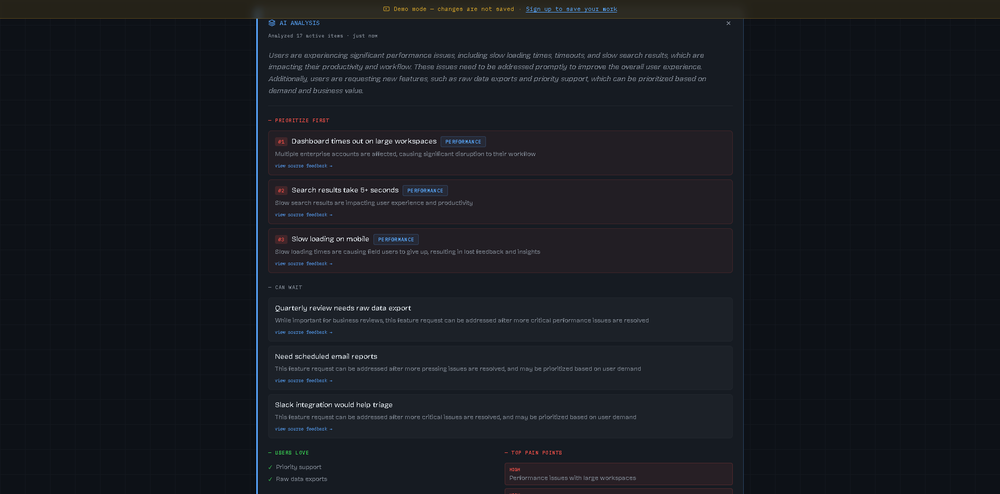

Pulse collects feedback from app reviews, support tickets, and surveys, classifies each item with AI, tracks sentiment and category trends week over week, and returns a ranked list of what to fix first and what can wait, with the evidence attached.
- Problem
- Feedback lands in one inbox and the loudest item wins. Nothing turns it into an ordered list of what to do.
- My role
- Product, design, and build, solo.
- Decision
- Forced the AI into a ranked output with explicit "can wait" calls instead of a summary paragraph, and attached a written rationale to every item.
- Trade-off
- Analysis runs on demand, not on every new item. The dashboard can lag briefly, and inference cost drops sharply.
- Outcome
- A live product that returns a "prioritize first" list and a "can wait" list, each item linked to its source feedback.
- React
- PostgreSQL
- Groq API
- Sentiment analysis
- Trend analytics
